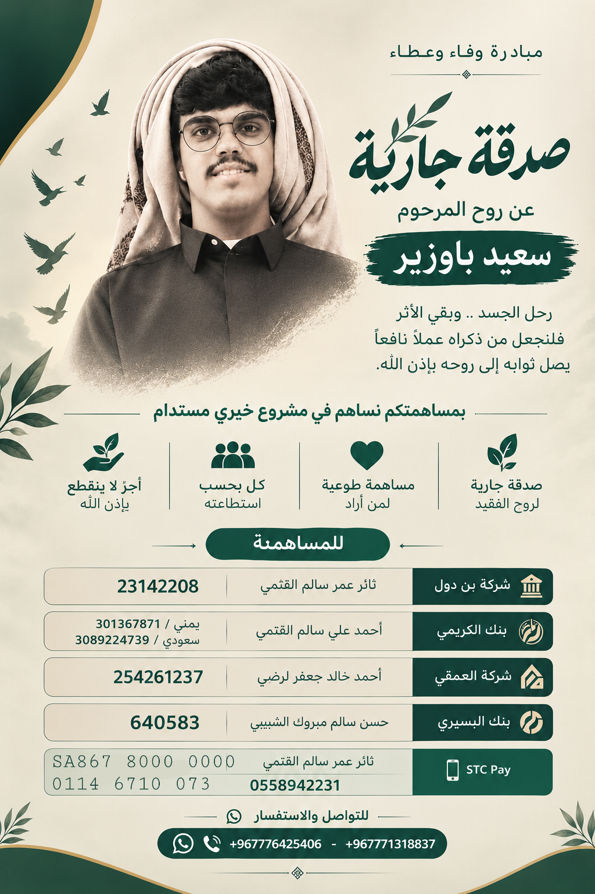

📖 القرآن الكريم
اقرأ القرآن الكريم أو استمع إلى التلاوات من مصدر موثوق.
تُفتح القراءة والتلاوة من مواقعها الأصلية.
🤲 ادعُ لسعيد
نسأل الله أن يتغمده بواسع رحمته.
اللهم اغفر لسعيد باوزير وارحمه، وعافه واعفُ عنه، وأكرم نزله، ووسّع مدخله.
اللهم آنس وحشته، ونوّر قبره، واجعل قبره روضةً من رياض الجنة.
اللهم اغفر له وارفع درجته في المهديين، واخلفه في عقبه في الغابرين، واغفر لنا وله يا رب العالمين.
دعاء مأثور في صحيح مسلم، مع استبدال الضمير باسم الفقيد.
🌿 الأذكار اليومية
اضغط على كل بطاقة لفتح رابط الأذكار المناسب.
⚡ شارك في الأجر والذكر
أعمال يسيرة تترك أثراً عظيماً في ميزان حسنات الفقيد بإذن الله.
عداد الاستغفار والتسبيح
اضغط في كل مرة تقرأ فيها استغفاراً أو تسبيحة:
سجّل دعاءً صادقاً
هل زرت الصفحة ودعوت له؟ اضغط هنا:
💚 مبادرة وفاء وعطاء
لمن أراد المساهمة، هذه تفاصيل المبادرة كما وردت في الصورة.

اضغط على الصورة لفتحها بحجم أكبر.
ذكر طيب ودعاء
سعيد باوزير رحمه الله
اللهم اجعل هذا العمل نافعًا وخالصًا لوجهك الكريم.